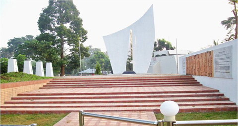

বৈচিত্র্যময় খাগড়াছড়ি
বিডিআর এর জন্ম সম্পর্কিত ঐতিহাসিক স্থানটি রামগড় উপজেলা পরিষদের পাশে ভারতীয় সীমান্তের কাছাকাছি অবস্থিত।
বর্তমান বাংলাদেশ রাইফেলস্ এর গোড়াপত্তন হয় রামগড়ে। বাংলাদেশ রাইফেলস্ এর ইতিহাস নিুরূপ:

১৭৯৫ সালের ২৯শে জুন রামগড় লোকাল ব্যাটালিয়ন নামে সৃষ্টি হয় এ বাহিনী। যার সৈন্য সংখ্যা ছিলো মাত্র ৪৪৮জন। সীমান্ত সমস্যা বৃদ্ধি পেলে এ বাহিনী পার্বত্য অঞ্চলের দীর্ঘকালীন অভিযানে অংশগ্রহণ করে। ৬পাউন্ড গোলার ৪টি কামান ও দু’টি অনিয়মিত অশ্বারোহী দল নিয়ে গঠিত হয় সেদিনের রামগড় লোকাল ব্যাটালিয়ন।
১৮৬১ সালে পূর্বাঞ্চলের নিয়মিত ও অনিয়মিত পুলিশ বাহিনীর সমন্বয়ে রামগড় লোকাল ব্যাটালিয়ন পুনর্গঠিত হয়। যার নামকরণ করা হয় ফ্রন্টিয়ার গার্ডস। সদস্য সংখ্যা ছিলো ১৪৫৮জন এবং সদর দপ্তর ছিলো চট্টগ্রামে। যার মধ্যে কামরূপ, গোয়ালপাড়া, লক্ষ্মীপুর, সিলেট ও ত্রিপুরার সীমান্ত ফাঁড়িগুলো অন্তর্ভুক্ত ছিলো। ১৮৭৯ সালে স্পেশাল রিজার্ভ কোম্পানির নামে এ বাহিনীর তৎকালীন সদস্যগণকে নিয়ে পিলখানায় প্রথম ঘাঁটি স্থাপন করা হয়। সে থেকে অদ্যাবধি পিলখানায় রাইফেলস সদস্যদের কর্মকান্ড অব্যাহত আছে।
১৮৯১ সালে বাহিনীর নতুন নামরকণ করা হয় বেঙ্গল মিলিটারী পুলিশ। ব্যাটালিয়নকে ৪টি কোম্পানীতে ভাগ করা হয়। ঢাকা, খুলনা, ভাগলপুর ও গ্যাংটকে কোম্পানীগুলো স্থানান্তর করে একজন ইউরোপীয় সুবেদারের অধীনে ন্যস্ত করা হয়।
১৯২০ সালে কালের বিবর্তনে বেঙ্গল মিলিটারী পুলিশের পুনঃ নামরকণ করা হয় ইস্টার্ণ ফ্রন্টিয়ার রাইফেলস্ এবং একে ১৬টি প্লাটুনে বিভক্ত করে সীমান্ত রক্ষা এবং অভ্যন্তরীণ নিরাপত্ত রক্ষায় নিয়োজিত করা হয়।
১৯৪৭ সালে ভারত বিভাগের পর এ বাহিনীর নামরকণ করা হয় ইস্ট পাকিস্তান রাইফেলস্ বা সংক্ষেপে ইপিআর। কোলকাতা মেট্রোপলিটন আর্মড পুলিশের একটি দল কতিপয় বাঙ্গালী এবং তদানিন্তন পশ্চিম পাকিস্তানের এক হাজার প্রাক্তন সৈনিক এ বাহিনীতে যোগ দেয়।
পরবর্তীতে আরও তিন হাজার বাঙ্গালীকে নিয়োগ করে এ বাহিনীকে পুনর্গঠিত করা হয়। দক্ষ নেতৃত্ব এবং দিক নির্দেশনার প্রয়োজনে সামরিক বাহিনী থেকে অফিসার নিয়োগ করা হয়। ১৯৫৮ সালে এ বাহিনীকে প্রদান করা হয় চোরাচালান দমনের দায়িত্ব। দেশ মাতৃকার সার্বভৌমত্ব রক্ষার্থে ১৯৫৮ সালে ব্রাহ্মণবাড়িয়া ১নম্বর ব্যাটালিয়ন অধিনায়ক মেজর তোফায়েল আহম্মেদ জীবন উৎসর্গ করে তৎকালীন রাষ্ট্রীয় খেতাব নিশান-ই-হায়দার অর্জন করেছিলেন।
প্লাটুন কমান্ডার শহীদ নায়েক সুবেদার মোহাম্মদ আজম অর্জন করেছিলেন সিতারা-ই জরাত। আমাদের মহান মুক্তিযুদ্ধে বিশেষ অবদানের জন্য এ বাহিনীর ১৪২জন সদস্য জাতীয় বীরত্বপূর্ণ খেতাবে ভূষিত হয়েছেন। যার মধ্যে মরণোত্তর বীর শ্রেষ্ঠ খেতাবে ভূষিত হয়েছেন শহীদ ল্যান্সনায়েক মুন্সি আব্দুর রউফ এবং শহীদ ল্যান্স নায়েক নুর মোহাম্মদ শেখ। বীর উত্তম খেতাবে ভূষিত হয়েছেন ৯জন, বীর বিক্রম খেতাবে ভূষিত হয়েছেন ৪০জন এবং বীর প্রতীক খেতাবে ভূষিত হয়েছেন ৯১জন।
দেশ স্বাধীনের পর ১৯৭২ সালের ৩রা মার্চ ইপিআর এর নতুন নামকরণ করা হয় বিডিআর (বাংলাদেশ রাইফেলস্)। রামগড়ে বাংলাদেশ রাইফেলস্ এর জন্ম উপলক্ষে একটি মনোরম স্মৃতিফলক রয়েছে। যাতে বিডিআর এর ধারাবাহিক ইতিহাস দেয়াল চিত্রের মাধ্যমে বিধৃত করা হয়েছে।